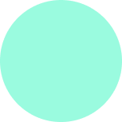

Шебекино
На самом деле в Шебекино не так много мест которые можно посетить, но все они красивые.
Первое место которое я советую посетить - Набережная, это красивое живописное место особенно зимой когда ее украшают различными новогодними атрибутами.

Давайте немного больше узнаем об этом замечательном городе
Шебекино имеет довольно долгую и интересную историю, например он старше чем Краснодар(1793), Екатеринбург(1723), Челябинск(1736). Сам город появился в 1713 году как слобода Шибекина. Название получил по фамилии местного администратора подполковника И. Д. Шибеко, руководившего заселением этой слободы. Позже название было искажено в Шебекино. С 1938 года имеет статус города.

Второе место про которое хочется рассказать это территория рядом с “ЦКР” на которой присутствую пляж, различные забегаловки, скейт площадка, места отдыха, сцена для проведения различных мероприятий и детская площадка, также можно арендовать самокат и покататься по красивому парку.